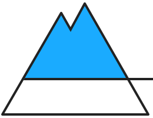

<section id="section-bulletin-report" class="section-centered section-bulletin section-bulletin-report">
	<div class="panel field callout warning-level-3">
		
		<header class="bulletin-report-header">
			<p>Warning Level for <strong>Saturday 09.12.2017 PM</strong></p>
			<h1><span>Erheblich, Stufe 3</span></h1>
		</header>
		
		<div class="bulletin-report-pictobar">
		
			<div class="bulletin-report-region">
				<a href="#page-main" class="img icon-arrow-up tooltip" title="This Bulletin is valid for the selected region.<br/>Click to return to Map" data-scroll>
					
				</a>
			</div>
			
			<ul class="list-plain list-bulletin-report-pictos">
				
				<li>
					<div class="bulletin-report-picto tooltip" title="Above 1800m: Warning Level 3<br/>Below 1800m: Warning Level 2">
						
						<span>1800m</span>
					</div>
					<div class="bulletin-report-tendency tooltip" title="Expectation for the following day">
						<span class="icon-arrow-increase"></span>
						<span><strong class="heavy">Tendency: Much Worse</strong><br />
						on Sunday 10.12.2017 PM</span>
					</div>
				</<li>
				
				<li>
					<div class="bulletin-report-picto problem-above tooltip" title="Avalanche problem occurring above 2200m">
						
						<span>2200m</span>
					</div>
					<div class="bulletin-report-picto">
						<a href="#" class="img tooltip" title="Drifting Snow. Click to learn more">
							
						</a>
					</div>
					<div class="bulletin-report-picto bulletin-report-expositions expo_n expo_w expo_nw tooltip" title="Exposition">
						
						
						
						
						
						
						
						
						
					</div>
				</li>
				
				<li>
					<div class="bulletin-report-picto problem-below tooltip" title="Avalanche problem occurring below 1900m">
						
						<span>1900m</span>
					</div>
					<div class="bulletin-report-picto">
						<a href="#" class="img tooltip" title="Old Snow. Click to learn more">
							
						</a>
					</div>
					<div class="bulletin-report-picto bulletin-report-expositions expo_e expo_se expo_s expo_sw tooltip" title="Exposition">
						
						
						
						
						
						
						
						
						
					</div>
				</li>
				
			</ul>
			
		</div>
		
		<h2 class="subheader">Oberhalb der Waldgrenze weiterhin verbreitet erhebliche Lawinengefahr</h2>
		<p>A fava bean collard greens endive tomatillo lotus root okra winter <a href=''>purslane</a> zucchini parsley spinach artichoke. Tattooed Williamsburg. Jean shorts proident kogi laboris. Non tote bag pariatur <a href=''>elit slow-carb</a>, Vice irure eu Echo Park ea aliqua chillwave. Cornhole Etsy quinoa Pinterest cardigan. Excepteur quis forage, Blue Bottle keffiyeh velit hoodie direct trade typewriter Etsy. Fingerstache squid non, sriracha drinking vinegar Shoreditch pork belly. Paleo sartorial mollit 3 wolf moon chambray whatever, sed tote bag small batch freegan. Master cleanse. Wes Anderson typewriter VHS jean shorts yr.</p>
		
	</div>
</section>